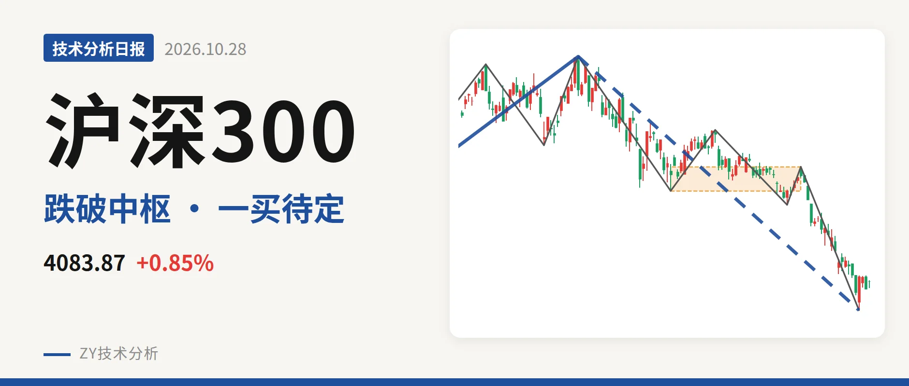
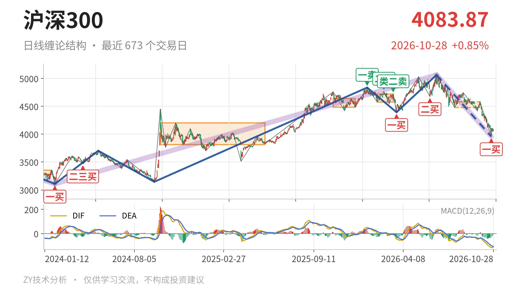
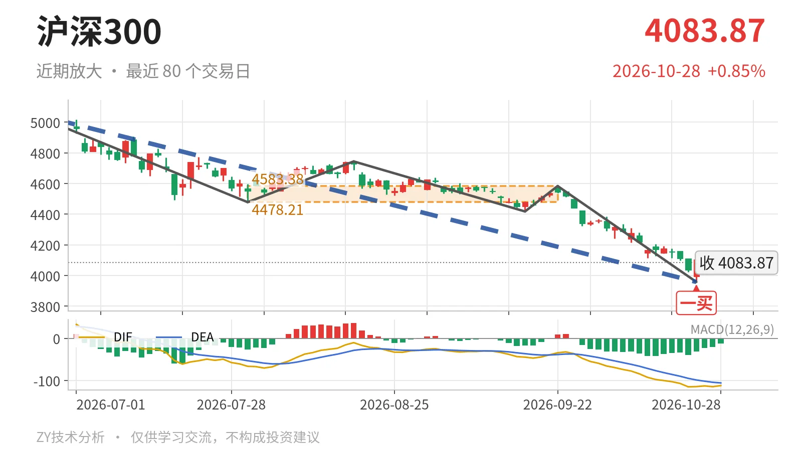

沪深300｜反抽未过4478，下跌段未完

最近日线中枢 4478.21—4583.38点，收盘位于中枢之下
一句话：日线一买后反抽，未回4478点中枢下沿，下跌段仍偏弱。
📉 走势结构：上涨段中的回落段还在延续
当前处于2024年2月2日低点3108.35点以来的上涨段内部，但6月23日以来的下跌段还在延续。更大级别上涨从3108.35点到2026年6月23日5064.27点，涨约63%，其内部出现6月23日至10月23日的日线下跌线段，跌21.8%，尚未结束。该线段已经包含5笔，低点落在3958.14点，未出现反向笔破坏，因此回落段没有完成。

📍 中枢与位置：收盘低于最近中枢下沿约8.8%
最新收盘4083.87点处在最近日线笔中枢4478.21—4583.38点下方，低于下沿约8.8%。该中枢为7月30日至9月22日形成，尚未完成；此前2月3日至3月17日中枢在4578.21—4720.86点，中轴4649.53点，最近中枢中轴降至4530.80点。中枢下移后，价格继续落在中枢下方，说明当前属于向上反弹未进入中枢的状态。
🔴 买卖点：3958点一买暂定，前高卖点只对应小级别
10月23日3958.14点的一买属于日线笔级别，目前是暂定的。1月13日一卖4836.95点、2月25日二卖4766.56点、3月17日类二卖4720.86点一个比一个低，但3月24日一买4394.29点后涨到5064.27点，创了新高，前面三个卖点只对应较小级别。6月8日二买4677.57点后未能延续，6月23日以来又破位回落。10月23日一买所在下跌笔已经结束，但更大级别下跌段还在延续，若后续跌破3958点，该一买只对应更小级别。

⚖️ 背驰：面积收缩但DIF新低，不是标准底背驰
6月23日以来的下跌段内部，9月22日至10月23日下跌笔没有形成标准的新低不新弱。该笔绿柱面积494，小于6月23日至7月30日下跌笔的650，但DIF低点由-66.5下移至-115.1，价格新低的同时DIF也新低。最新DIF仍在零轴下方，为-112.2。这种面积背驰未获DIF配合，因此3958.14点附近虽有笔级别一买信号，但更大级别底背驰尚未成立。
🔎 关键位置：反抽不过4478点，下跌段难言结束
结构能否转强，先看4478点附近。10月26日以来的反弹只有三根K线，最高4110.00点，尚未成笔，距离4478点还有约368点。若此后的反抽回不到4478点上方，结构上构成日线笔级别三卖，6月23日以来的下跌段就没有结束。若重新站上4478点并回到4583点上方，下跌更可能只是中枢扩展。在此之前，结构仍偏弱：弱在收盘低于中枢下沿，且反弹尚未触及4478点。
⚠️ 本文为基于公开行情数据的缠论技术结构记录，由程序自动计算并生成，仅供学习交流，不构成任何投资建议。市场有风险，投资需谨慎。